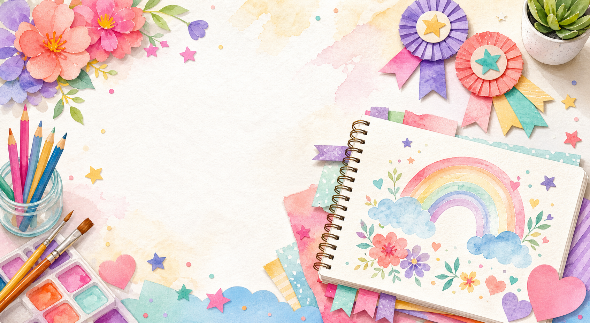
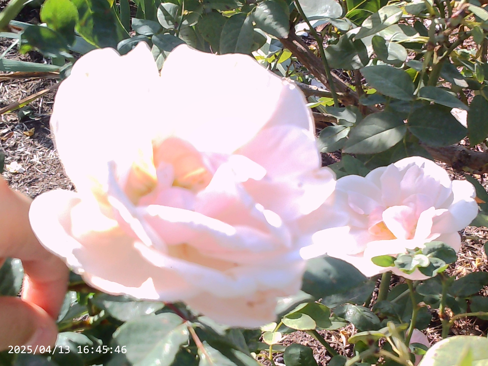

Drawing
Rainbow Garden
A cheerful garden idea with bright colors, flowers, and patterns.
Creative scrapbook
Art, achievements, projects, and favorite memories.

Artist, maker, reader
About
Hi, I am Zoe. I like making colorful art, reading fun stories, building creative projects, and saving favorite memories in one happy place. This portfolio is where my family can help me share art, achievements, and projects I am proud of.
Gallery
Replace the sample image paths with Zoe's real artwork files when you are ready.
Drawing
A cheerful garden idea with bright colors, flowers, and patterns.

Painting
A peaceful sky with warm peach, pink, and lavender colors.

Craft
Layered paper flowers made with careful cutting, folding, and color choices.

Digital
A cozy room design with favorite colors, shelves, and creative details.

Drawing
A page of shapes, borders, swirls, and repeating designs.

Painting
A bright outdoor scene with soft clouds and playful brushstrokes.
Photography
Put favorite photos in assets/photos/, then update the image paths and captions below.

Nature
A close-up flower photo with soft petals and bright color.

Everyday
A place for an interesting detail, color, texture, or tiny moment.

Creative View
A place for a favorite view, shadow, pattern, or composition.
Milestones
Use this section for safe, general accomplishments and proud moments.
Finished a set of books and kept track of favorite characters and ideas.
Made a group of drawings, paintings, and crafts to share with family.
Practiced, showed courage, and helped make the performance special.
Contributed time, kindness, and creativity to a helpful project.
Projects and favorites
Edit these cards with hobbies, books, subjects, crafts, music, or sports.
Trying new colors, sketching ideas, and making little collections.
Adventure stories, funny chapters, and books with creative characters.
Paper crafts, handmade cards, bead designs, and decorated notebooks.
Listening to favorite songs, learning rhythms, or practicing a performance.
Building, testing ideas, solving puzzles, and asking good questions.
Games, movement, teamwork, and trying new activities.
Files
Put PDFs, documents, or display files in assets/files/, then update the links below.
A place to link a scanned art booklet, project PDF, or family-approved portfolio file.
Open sample-art-collection.pdfA place to share a short story, writing sample, or creative project document.
Open story-example.pdfImage or document
Copy this card when you add another family-approved file to the folder.
See file instructions